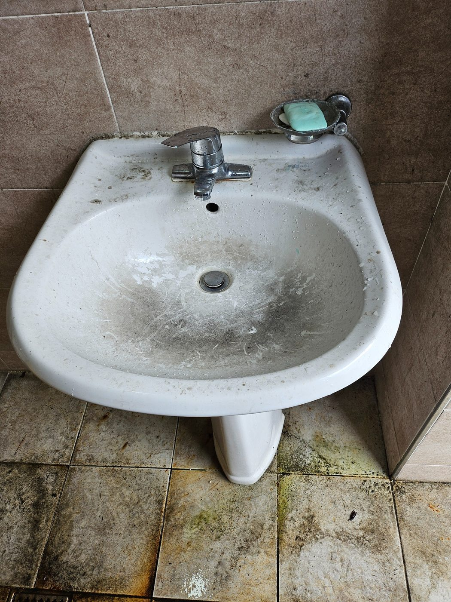
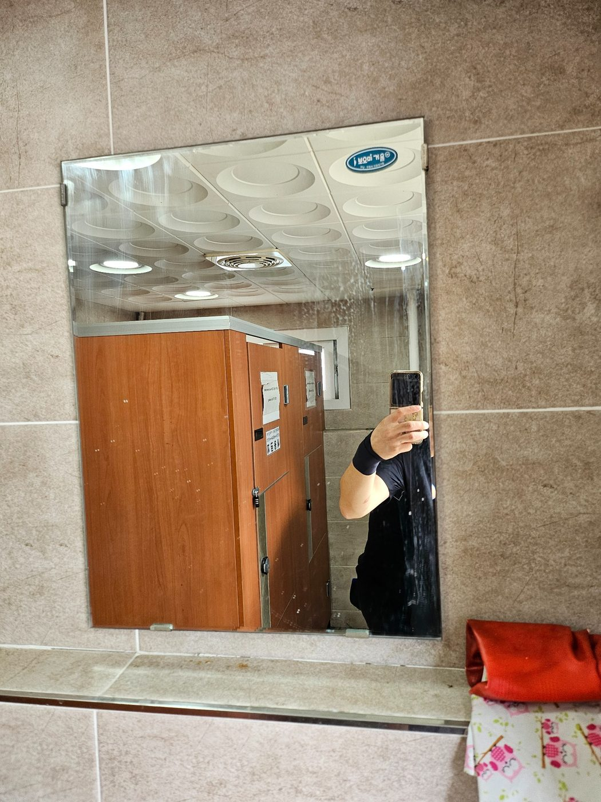
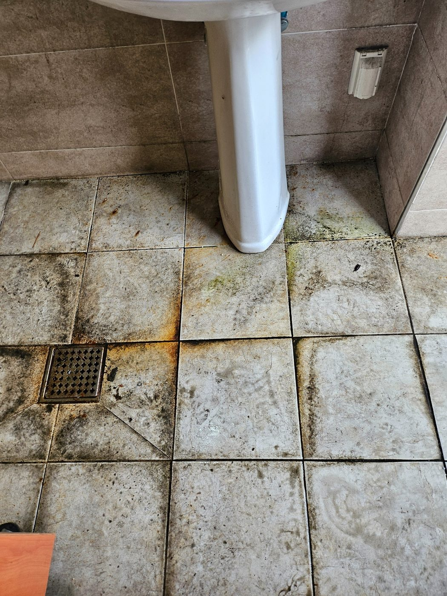
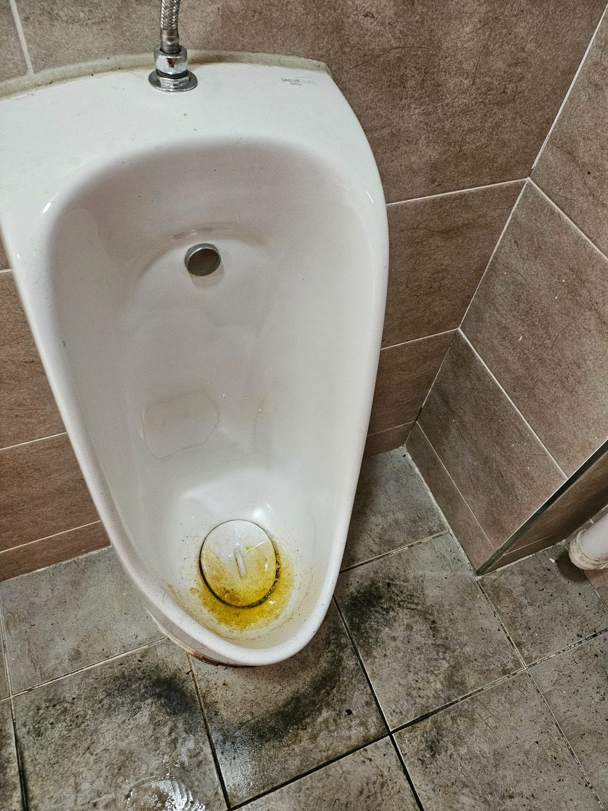
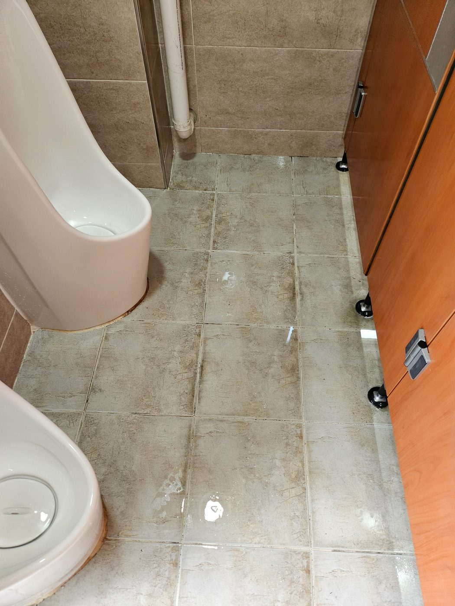
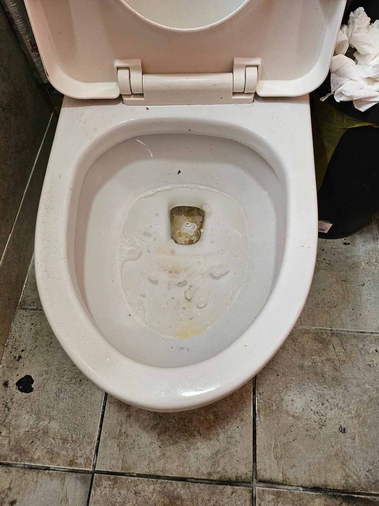
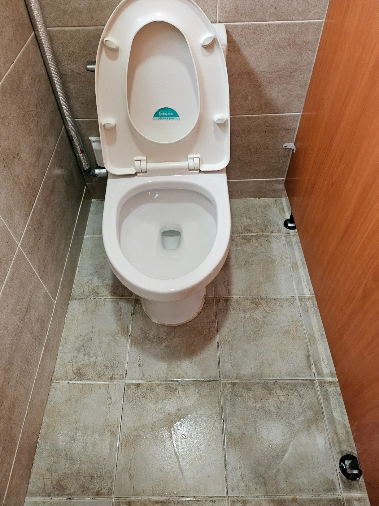
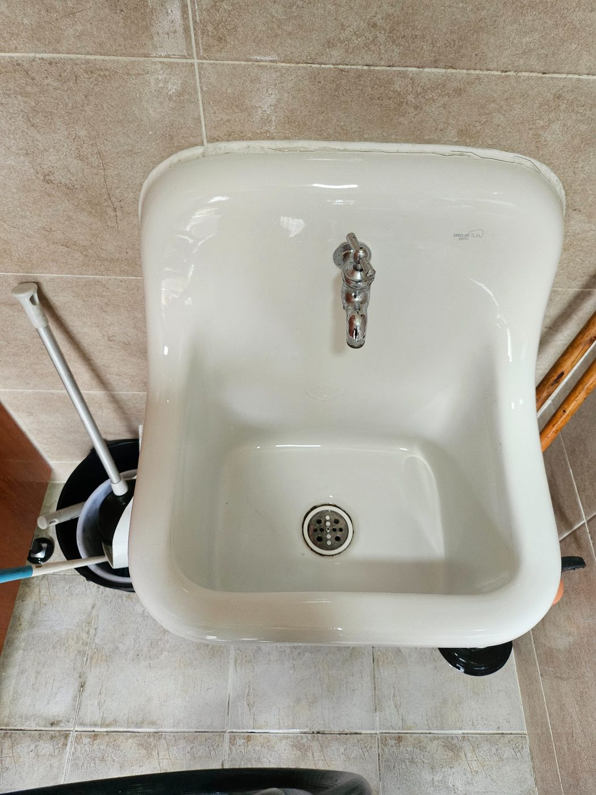

산막공단 공장 화장실 실제 청소 현장
공장 화장실은 작업 인원과 사용량에 따라 변기, 소변기, 세면대, 바닥에 오염이 빠르게 반복됩니다. 이번 페이지는 양산 산막공단 공장 화장실의 실제 작업사진을 별도 사례로 정리했습니다.

위생기기와 바닥을 함께 관리



공장 화장실은 반복 관리가 중요합니다
한 번의 대청소 후에도 사용량이 많으면 다시 오염되는 속도가 빠를 수 있습니다. 공장 사무실, 계단, 공용부와 함께 정기청소 범위로 묶어 관리하면 전체 사업장의 상태를 일정하게 유지하기 좋습니다.

작업 후 확인



양산 산막공단 공장 화장실청소 무료 방문견적
현장 규모와 오염 상태, 관리 범위를 확인한 뒤 안내드립니다. 대량건도 문제없습니다.